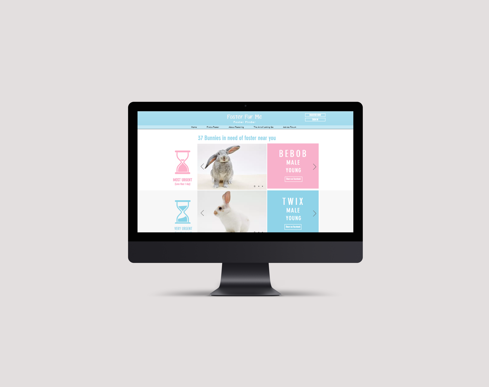

The purpose of this project was to find and solve a problem in the world relating to safety, health, or education. My group and I chose to make a website in order to streamline the process when fostering a pet. There is no website or resource that does this right now which we found to be a huge problem because the life of a pet would be at stake. To begin with, we found through a survey that many people didn't really understand the difference between adoption and fostering. We wanted to emphasize that the main reason for fostering was to save a life. If the shelter does not have enough space, they will set an euthanasia date for that animal and if they are not adopted or fostered by that date, they will be put down. This is very sad because one simple solution would be for people to foster. Fostering provides a temporary home for the animal and gives it more time to find a forever home.
We decided that the best way to communicate the urgency of this was to create a database sorted by how much time left an animal had before its euthanasia date. We found through user testing that this was a strong and unique concept since none of this kind existed to date. This was the main feature of our website which generated many positive responses. We also included several other resources that would help those who are interested in fostering, have one place to find all the information they needed.
